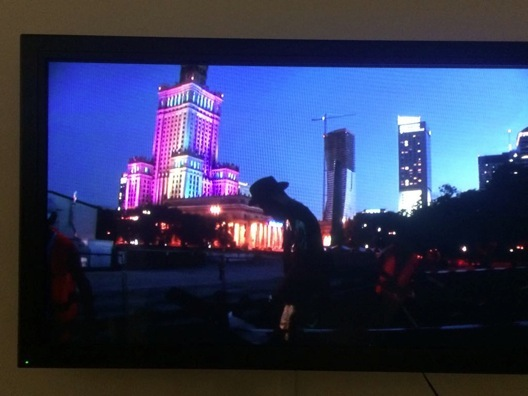
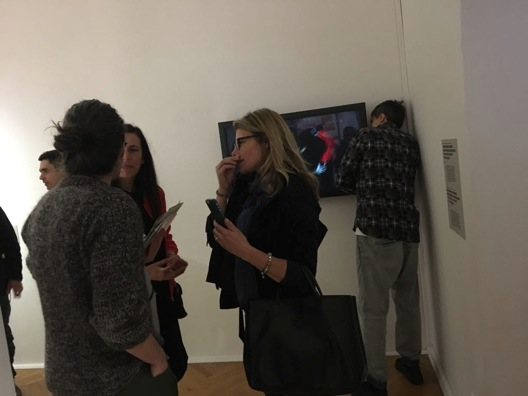
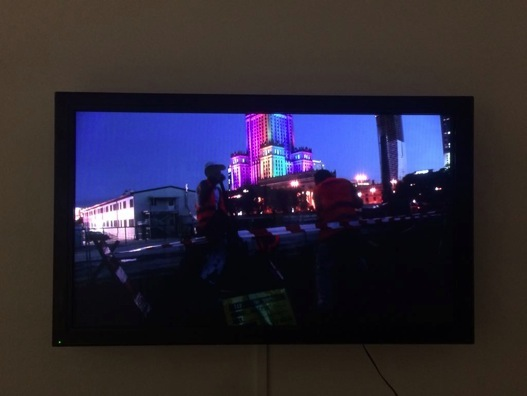

eksponowana praca: “ROZPOCZĘCIE BUDOWY MUZEUM” - dokumentacja:


copyright for the website: Jan Lubicz Przyluski - All Rights Reserved
Wystawa >>
PLAC DEFILAD. KROK DO PRZODU
2017
Warszawa
Galeria Studio, Muzeum Sztuki Nowoczesnej